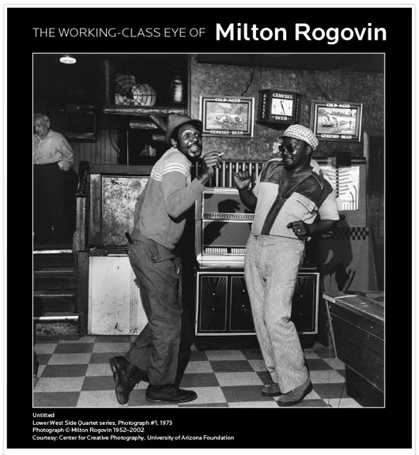

No current exhibits scheduled.
Stay tuned for current exhibit news or contact Mark Rogovin for information.
Traveling exhibitions are available to institutions and groups. Learn more »
The Working-Class Eye of Milton Rogovin
Gage Gallery, Roosevelt University, 18 S. Michigan Ave., Chicago

Exhibit Dates: January 20 - June 30, 2011
MILTON ROGOVIN: A LIFE IN PHOTOGRAPHY
Lecture by Melanie Herzog, Professor of Art History at Edgewood College and Author of Milton Rogovin: The Making of a Social Documentary Photographer.
Sponsored by the Gage Gallery, Department of History and Philosophy, the Center for New Deal Studies and the Chicago Center for Working-Class Studies.
Gage Gallery Exhibition: The Working-Class Eye of Milton Rogovin
The College of Arts and Sciences, the Chicago Center for Working-Class Studies and the Labor and Working-Class History Association are sponsoring The Working-Class Eye of Milton Rogovin at the Roosevelt University Gage Gallery, 18 S. Michigan Avenue. This is a one-of-a-kind, vintage photo exhibit that tells compelling stories about work and working-class people through the eyes of renowned photographer Milton Rogovin (who passed away on Jan. 18 at the age of 101). The exhibition is made possible by generous financial support from Susan B. Rubnitz and runs through June 30, 2011.